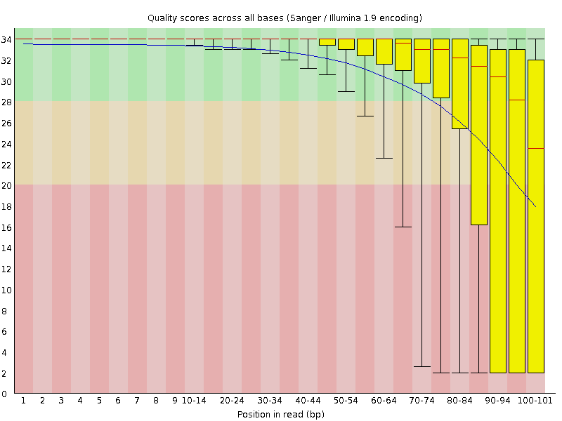
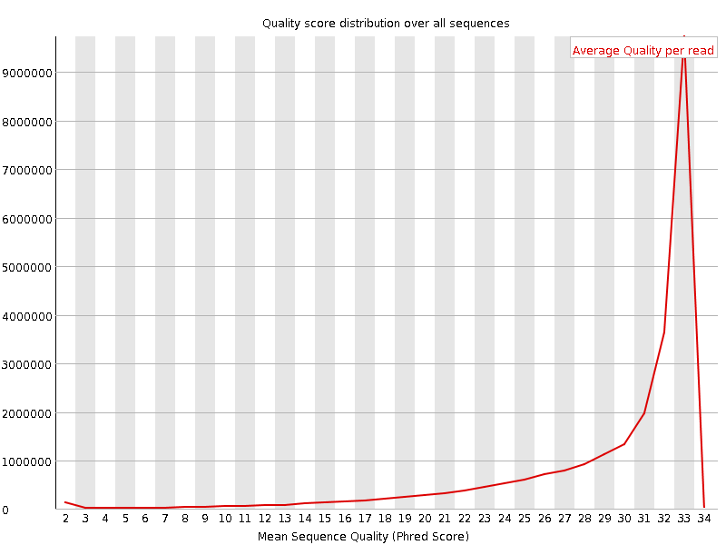
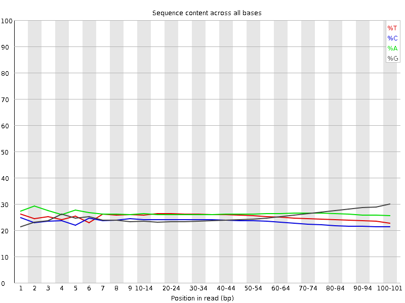
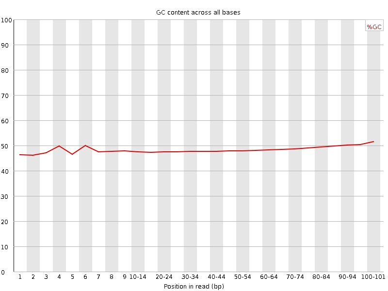
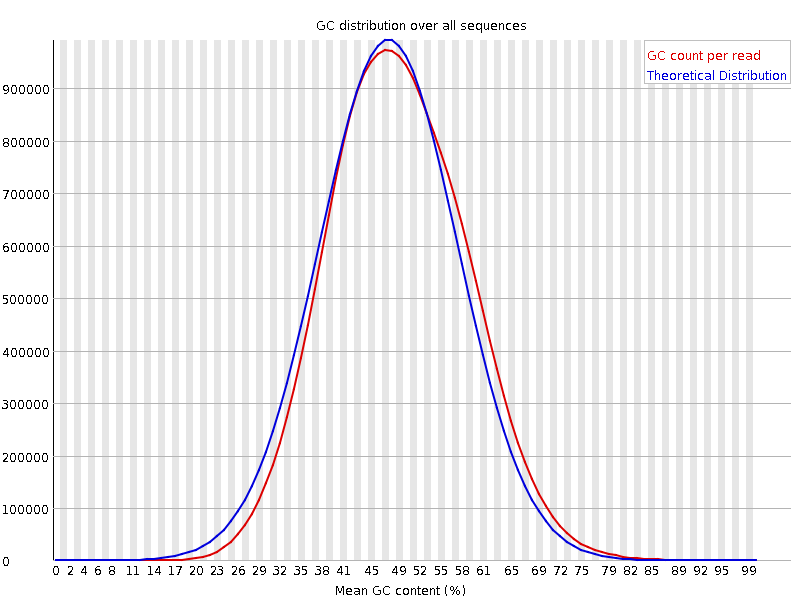
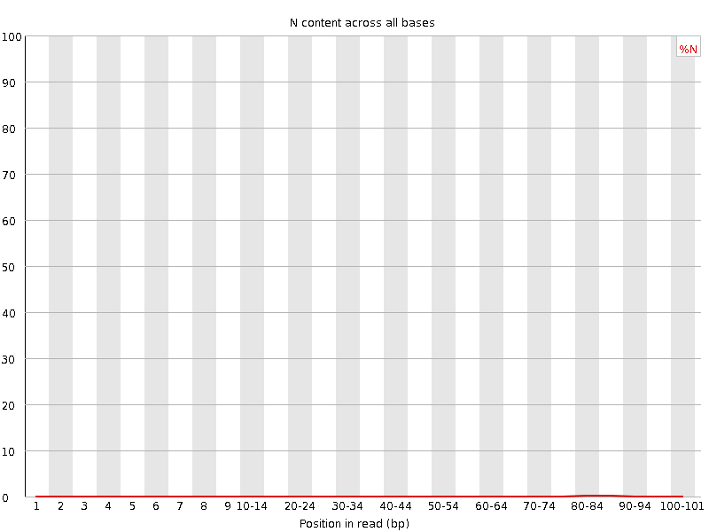
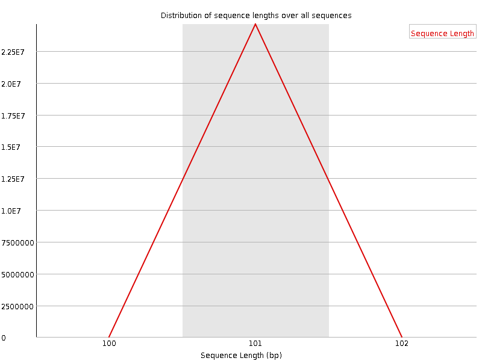
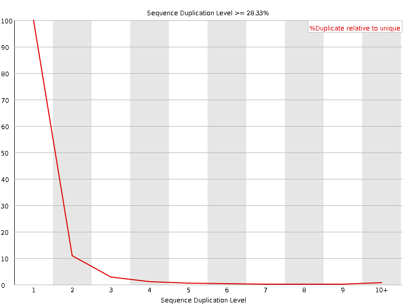
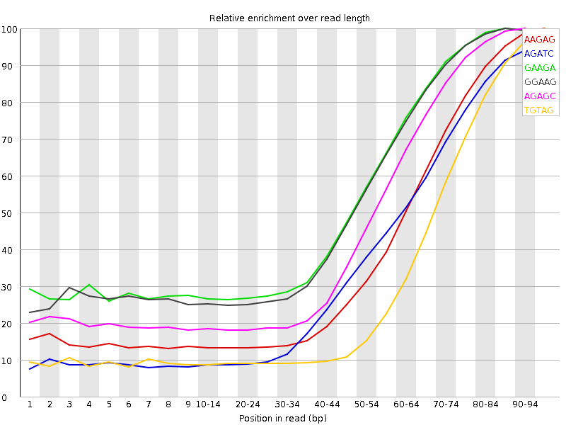

![[OK]](Icons/tick.png) Basic Statistics
Basic Statistics
| Measure | Value |
|---|---|
| Filename | ERR361059_2.fastq |
| File type | Conventional base calls |
| Encoding | Sanger / Illumina 1.9 |
| Total Sequences | 24597715 |
| Filtered Sequences | 0 |
| Sequence length | 101 |
| %GC | 48 |
![[FAIL]](Icons/error.png) Per base sequence quality
Per base sequence quality

Per sequence quality scores

Per base sequence content

Per base GC content

Per sequence GC content

Per base N content

Sequence Length Distribution

![[WARN]](Icons/warning.png) Sequence Duplication Levels
Sequence Duplication Levels

Overrepresented sequences
No overrepresented sequences
Kmer Content

| Sequence | Count | Obs/Exp Overall | Obs/Exp Max | Max Obs/Exp Position |
|---|---|---|---|---|
| AAGAG | 12414560 | 4.4667897 | 10.401469 | 95-97 |
| AGATC | 10655465 | 4.366934 | 10.50445 | 95-97 |
| GAAGA | 11078360 | 3.9860225 | 6.8643413 | 85-89 |
| GGAAG | 10541510 | 3.9476154 | 6.8859754 | 85-89 |
| AGAGC | 8328220 | 3.4002311 | 6.6907988 | 90-94 |
| TGTAG | 8126130 | 3.1913874 | 9.325643 | 95-97 |
| GTGTA | 7658485 | 3.007728 | 8.869735 | 90-94 |
| GATCG | 6986335 | 2.9800355 | 6.2107434 | 80-84 |
| ATCGG | 6839855 | 2.9175537 | 6.2227926 | 85-89 |
| TCGGA | 6773710 | 2.8893394 | 6.170676 | 85-89 |
| CGGAA | 6806740 | 2.779044 | 5.9890633 | 85-89 |
| AAAGA | 8018115 | 2.7718437 | 5.4707003 | 95-97 |
| GAGCG | 6195950 | 2.6328852 | 6.4192276 | 95-97 |
| AGGGA | 7022480 | 2.629799 | 5.6179657 | 95-97 |
| GCGTC | 5417275 | 2.6220734 | 6.6202507 | 90-94 |
| GGAAA | 7228815 | 2.6009464 | 5.3409395 | 90-94 |
| GGGAA | 6915305 | 2.5896635 | 5.9157887 | 95-97 |
| GAAAG | 6934480 | 2.4950435 | 5.363669 | 95-97 |
| CGTCG | 5026505 | 2.4329326 | 6.489837 | 90-94 |
| AGCGT | 5629550 | 2.4012957 | 5.8534875 | 90-94 |
| TCGTG | 5108330 | 2.276495 | 5.8963475 | 95-97 |
| CGTGT | 5050160 | 2.250572 | 5.912398 | 90-94 |
| GTCGT | 4982770 | 2.2205398 | 5.826315 | 90-94 |
| GTAGG | 5332985 | 2.0864987 | 5.383024 | 95-97 |
| ATCTC | 4293380 | 2.0042112 | 5.358278 | 95-97 |
| TAGGG | 5070715 | 1.9838874 | 5.333999 | 95-97 |
| TAGAT | 5212370 | 1.9668138 | 5.643514 | 95-97 |
| CTCGG | 2640310 | 1.2779647 | 5.047656 | 95-97 |
| TCTCG | 2521280 | 1.2249912 | 5.0346327 | 95-97 |